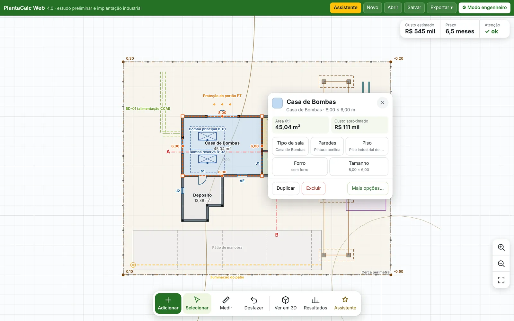
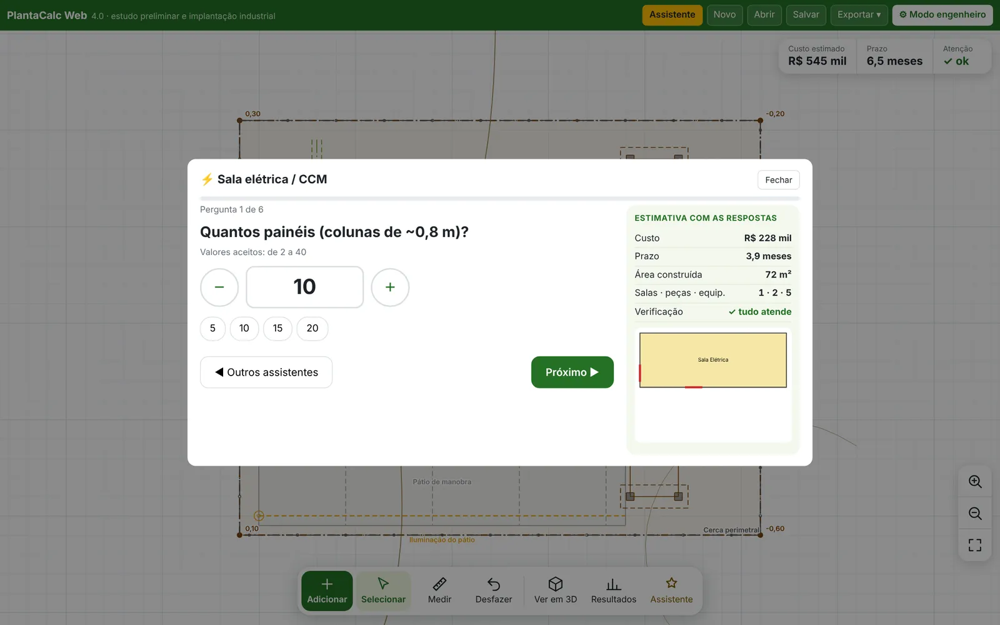
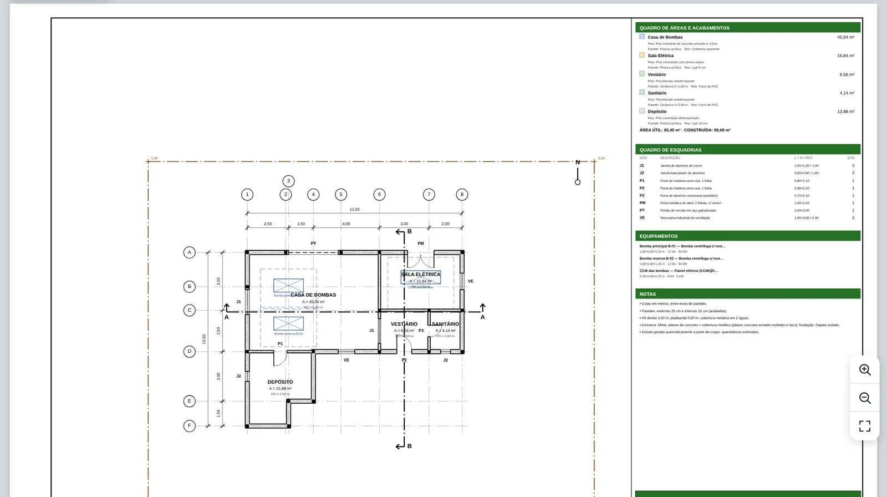
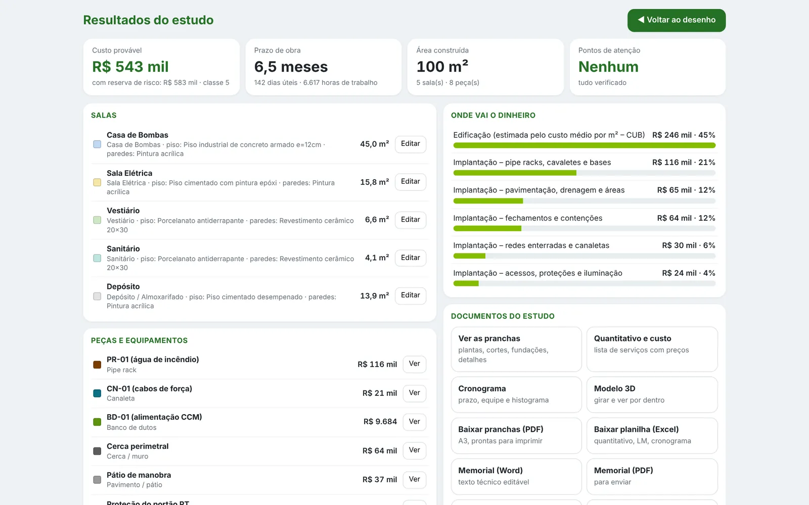
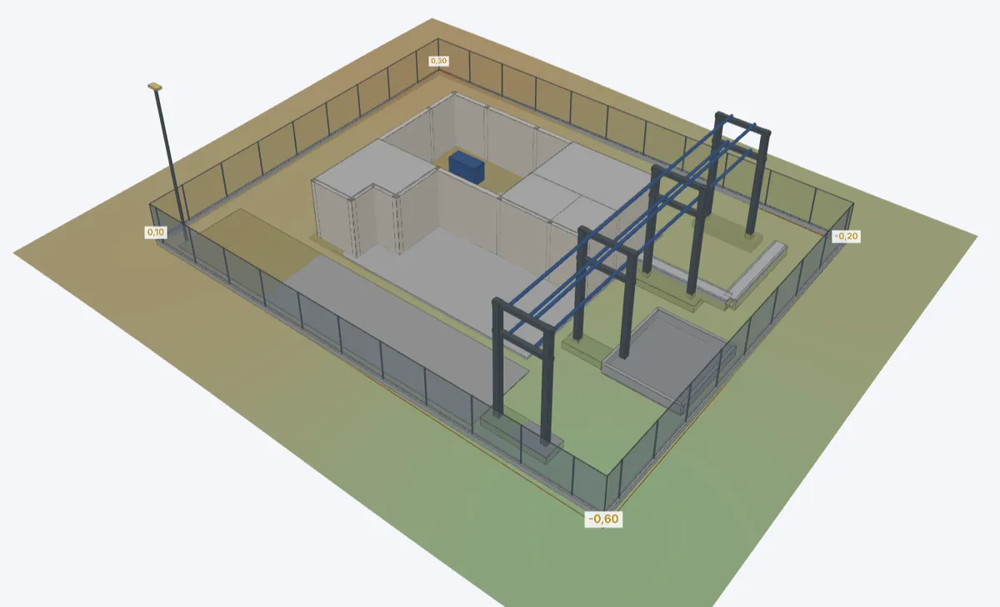
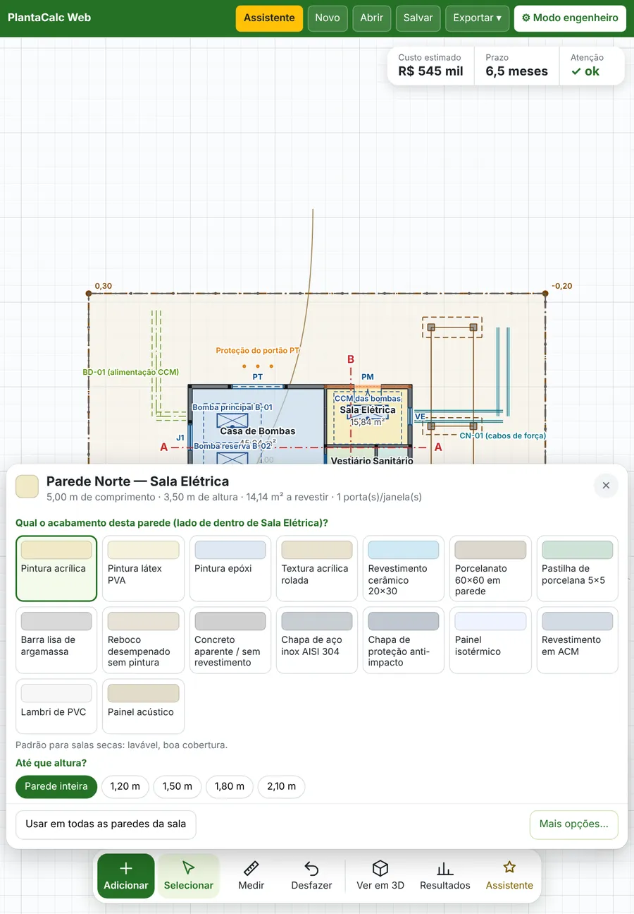

PlantaCalc
PlantaCalcDo croqui ao orçamento em minutos.
Desenhe as salas com o dedo ou responda algumas perguntas. O PlantaCalc monta as pranchas, calcula o quantitativo e orça pelo SINAPI do seu estado, com BDI pela fórmula do TCU e curva ABC. Também calcula o prazo, escreve o memorial e mostra tudo em 3D.

Recursos
Tudo o que um estudo preliminar precisa, num só lugar.
Feito por engenheiro de obras industriais para quem precisa de número confiável cedo — antes do projeto executivo.
Responda perguntas. Receba o estudo dimensionado.
Os assistentes fazem uma pergunta por vez e já mostram custo, prazo e área enquanto você responde. No fim, conferem tudo antes de criar.
- Casa de bombas, sala elétrica/CCM, base de equipamento, galeria e canaleta, pátio e reforma/demolição
- Afastamentos da NR-10, portas abrindo no sentido da fuga, fundações e escoramento
- Avisa com antecedência quando um caso foge do comum

Pranchas técnicas que já saem cotadas.
Planta detalhada, estrutura, cortes, fachadas, fundações, quadros de pilares, armaduras e acabamentos, implantação e detalhes típicos — com carimbo, legenda e notas.
- PDF em A3 pronto para imprimir
- DXF para AutoCAD e IFC 4 para Revit e Navisworks
- Planta de fundo em PDF colocada na escala para desenhar por cima

Orçamento pelo SINAPI do seu estado.
Cada serviço do quantitativo recebe a composição SINAPI equivalente, com custo unitário, horas de mão de obra e memória de cálculo. Você revisa os vínculos e o PlantaCalc fecha o orçamento.
- Preços dos 27 estados, com e sem desoneração, publicados mês a mês
- BDI pela fórmula do Acórdão TCU 2.622/2013, com conferência das faixas e BDI diferenciado para fornecimento de materiais
- Curva ABC de serviços e de insumos e composições analíticas em PDF e Excel

Custo, prazo e riscos sem planilha paralela.
Quantitativo por serviço com preço, custo provável com reserva de risco, cronograma com equipe e histograma, e a lista do que precisa de atenção.
- “Onde vai o dinheiro” por etapa da obra
- Excel com quantitativo, lista de materiais por disciplina e memória de cálculo
- Memorial descritivo em Word, editável
Veja o conjunto em 3D antes de apresentar.
Terreno, edificação, pipe racks, canaletas, cercas e bases aparecem juntos. Gire, aproxime e exporte a imagem para a reunião.

Acabamento por parede
Toque na parede e escolha pintura, cerâmica, porcelanato, epóxi… com a altura da barra.
Planta de fundo na escala
Carregue um PDF ou foto, informe a escala ou meça uma cota conhecida e desenhe por cima.
Cronograma e histograma
Sequência das etapas, equipe por função e prazo em dias úteis.
Segurança do trabalho
Itens de NR-18, NR-33 e NR-35 entram sozinhos no quantitativo conforme a obra.
Vários projetos, salvos sozinhos
Cada alteração é salva automaticamente, com lixeira de 30 dias. Com uma conta, seu projeto abre no computador, no tablet e no celular; no Pro, quantos projetos você quiser e versões anteriores.
App Android
A mesma conta e os mesmos projetos no celular e no tablet Android, em tela cheia. Depois do primeiro acesso, abre mesmo sem internet.
Modo simples e modo engenheiro
Tela limpa para quem está começando; todos os parâmetros quando você precisar.
Como funciona
Três passos, sem curso.
Comece com o assistente ou com um desenho rápido. Ajuste tocando no que quiser mudar.
Comece
Escolha um assistente, desenhe uma sala ou carregue a planta que você já tem.
Ajuste
Toque numa sala, parede ou peça: renomeie, troque o tipo, o piso, o revestimento e as medidas.
Entregue
Baixe as pranchas, a planilha, o memorial e o modelo 3D para levar à reunião.
No tablet também
Leve o estudo para a obra.
A tela se reorganiza no tablet em pé ou deitado. Botões grandes, cartões que abrem embaixo e o desenho sempre visível.
Abrir no meu aparelho
Planos
Grátis para usar. Pro para entregar.
Experimente de graça em um projeto, na tela. O Pro libera o quantitativo completo, a exportação dos arquivos e projetos ilimitados, sem anúncios.
Gratuito
- Todos os assistentes e cálculos
- Pranchas, cronograma, memorial e 3D na tela
- Quantitativo parcial (metade da tabela) e só a faixa de custo
- 3 usos por mês do assistente de IA (só desenhar)
- 1 projeto
- Sem exportar arquivos (PDF, Excel, Word, DXF, IFC)
- Com anúncios
- Pranchas com marca d'água “versão gratuita”
Pro
- Tudo do Gratuito
- Quantitativo completo, curva ABC e análise de custo
- Orçamento pelo SINAPI do seu estado, com BDI do TCU e composições analíticas
- Exporta PDF, Excel, Word, DXF e IFC
- Projetos ilimitados, na nuvem e em qualquer aparelho
- Assistente de IA: desenha o croqui a partir de uma descrição e redige o escopo técnico
- Sem nenhum anúncio
- Pranchas e PDF sem marca d'água
- Cancele quando quiser, sem multa
Pagamento pelo Mercado Pago. Desistiu nos primeiros 7 dias? Devolvemos o valor integral (Código de Defesa do Consumidor, art. 49).
Dúvidas
Perguntas frequentes
Preciso instalar alguma coisa?
Não. O PlantaCalc abre no navegador (Chrome, Edge, Safari ou Firefox) do notebook, do tablet ou do celular.
O estudo substitui o projeto executivo?
Não. O PlantaCalc gera estudo preliminar: serve para estimar custo e prazo, comparar alternativas e apoiar a decisão. Obra exige projeto executivo com responsável técnico e ART.
Onde ficam os meus projetos?
No seu aparelho, salvos automaticamente em “Meus projetos”. Se você criar uma conta (grátis), ficam também na nuvem e abrem em qualquer computador ou tablet. O plano Gratuito guarda 1 projeto; o Pro, quantos você quiser. No Pro você também pode exportar o arquivo do projeto (.json) como cópia de segurança.
De onde vêm os preços?
De uma base de preços de referência que vem com o sistema. Você pode ajustar os preços unitários e índices no modo engenheiro para a sua região ou para a sua empresa.
Como funciona o pagamento do Pro?
A assinatura é feita pelo Mercado Pago, mensal ou anual, com renovação automática. Você cancela quando quiser em “Minha conta” e continua com o Pro até o fim do período pago.
Posso usar o plano Gratuito em trabalho profissional?
Sim. A única diferença são os anúncios na tela e a marca d'água “versão gratuita” nas pranchas.
Faça o seu primeiro estudo agora.
Crie sua conta grátis e faça o estudo em menos de 15 minutos.
Abrir o PlantaCalc